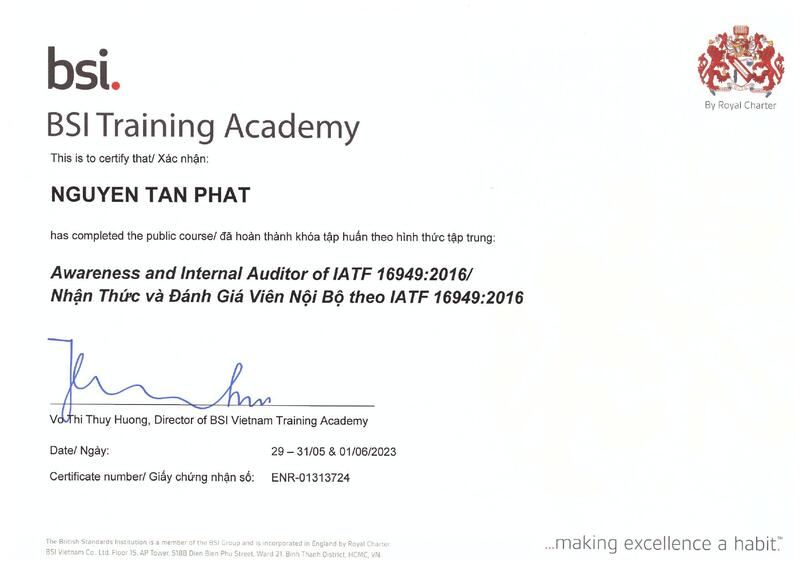
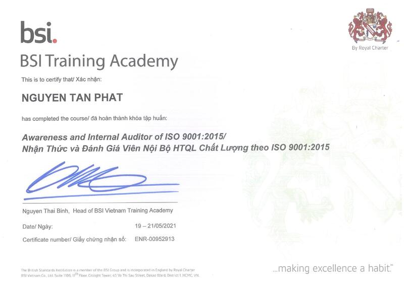
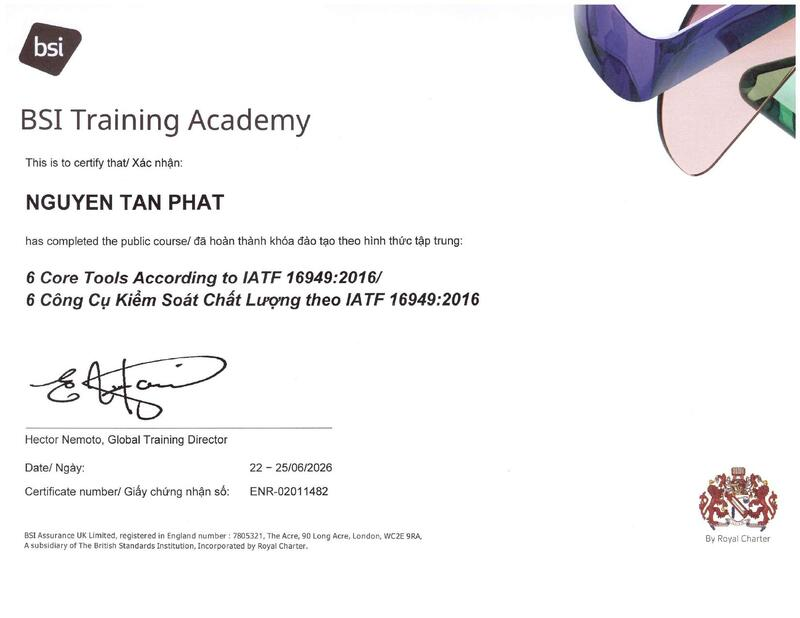
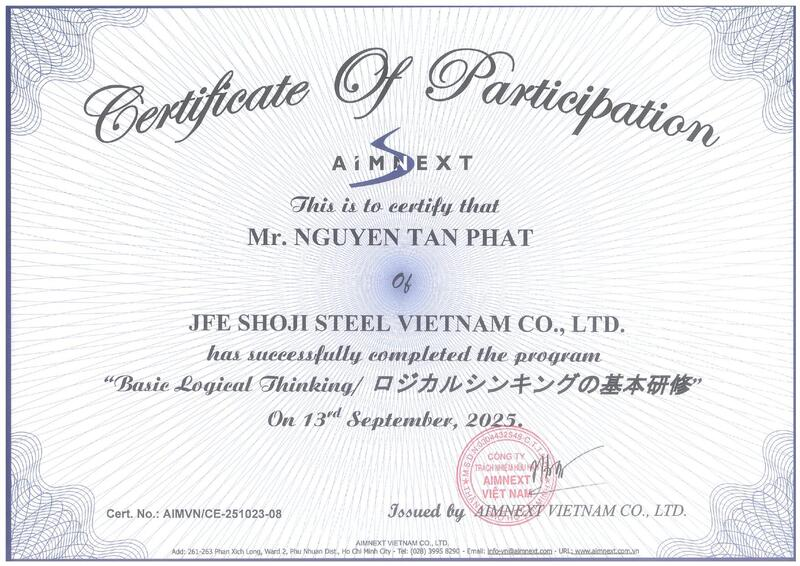

Quality Assurance · Steel Coil Processing
Assistant Quality Manager — JFE Shoji Steel Vietnam
Ten-plus years building quality systems for steel coil processing — from root-cause investigation and IATF 16949 / ISO 9001 audits to supplier control and new-product qualification. I read a control chart the way most people read a headline.
Inspection ID Card
Profile
I turn customer complaints and abnormalities into countermeasures — and countermeasures into systems that don't repeat the failure.
Assistant Quality Manager with over 10 years of experience in the steel coil processing industry, currently leading the quality function at JFE Shoji VN across abnormality, root-cause investigation, QA assurance, customer & certification audit preparation, supplier audit, new product development and digital transformation. Practical experience in applying Automotive Core Tools (APQP, PPAP, PFMEA, Control Plan, SPC, and MSA), IATF 16949 and ISO 9001 requirements, as well as structured problem-solving methods such as Fishbone Diagram, 5 Whys, and 8D, with strong capability in monthly quality data analysis and cross-functional team leadership.
Career Timeline
Three roles, one thread: catch the defect earlier, prove it with data, stop it from coming back.
Manage 3 teams including Material, Mechanical Laboratory, Chemical Laboratory
Education & Standards
Recognition
Capabilities
Grouped the way a quality manual would group them — systems, methods, audit, and the tools that run underneath.
On File
Scans of the original certificates — issuer, date and certificate number included for verification.

BSI
BSI
BSI
AIMNEXT